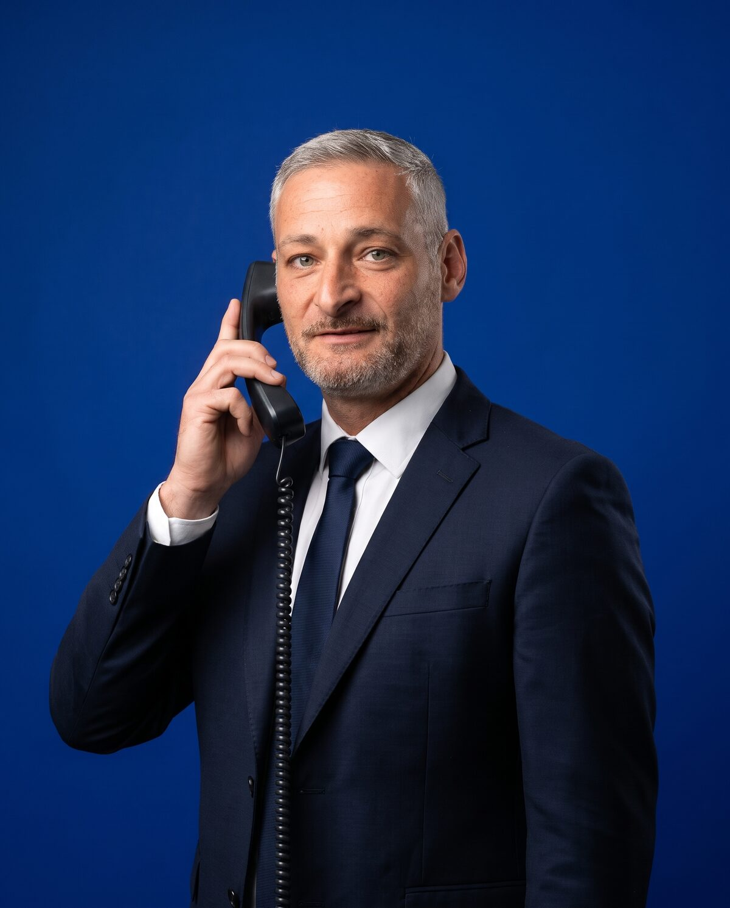

27 Jahre im Vertrieb. Und jeden Morgen noch selbst am Telefon.
Ich bin Fares Chahrour. Ich trainiere Verkäufer, Vertriebsteams und Führungskräfte in dem, was ich selbst jeden Tag mache: Kunden anrufen, die richtigen Fragen stellen, einen klaren nächsten Schritt vereinbaren.
Kostenlos. Buchung über Calendly (Datenschutz).

Laufbahn statt Lehrbuch
Vertrieb kenne ich aus Gesprächen, nicht aus Seminaren. Jede Station, an der ich heute trainiere, habe ich selbst durchlaufen.
| Zeit | Station | Status |
|---|---|---|
| Start | Technische Ausbildung bei Procter & GambleIndustriemechaniker. Danach der Wechsel in den Vertrieb. | abgeschlossen |
| 1999 | Erster Tag im VertriebKunden beraten, selbst verkaufen. | abgeschlossen |
| 2000–19 | Geschäftsstellenleiter, Deutsche VermögensberatungEigene Vertriebsstruktur aufgebaut, jeden Berater selbst ausgebildet. | abgeschlossen |
| AEVO | Ausbildereignung nach AEVO | abgeschlossen |
| Heute | Operative B2B-Akquise, jeden Tag am Telefon80 bis 110 Anrufe am Tag | läuft |
| Heute | Praxis-Coach bei Vertriebscoach im Ohr | läuft |
Fünf V. Ein Gespräch.
Gute Telefonate entstehen nicht aus auswendig gelernten Sätzen. Sie entstehen aus Vorbereitung, echtem Interesse, den richtigen Fragen und klaren Vereinbarungen. Tippen Sie einen Abschnitt an.
Zielkunde, Anlass, Gesprächsziel und Gesprächshaltung klären.
Was Sie danach könnenMit einer guten, relevanten Frage beginnen.
Heimspiel: Finanzvertrieb
19Jahre Geschäftsstellenleiter in der Vermögensberatung
Von 2000 bis 2019 habe ich bei der Deutschen Vermögensberatung eine eigene Vertriebsstruktur aufgebaut und jeden Berater selbst ausgebildet. Ich weiß, wie es ist, ein Team wachsen zu sehen und keine Zeit zu haben, neuen Leuten das Telefonieren beizubringen.
Genau dort setzt Vertriebscoach im Ohr an: Der digitale Coach startet seinen ersten Piloten im Finanzvertrieb, mit Telefontraining über 90 Tage. Ich begleite ihn als Praxis-Coach.
ExternVertriebscoach im Ohr kennenlernenEin eigenständiges Angebot mit eigenem Leistungsumfang.
Drei Wege. Nicht zehn Seminare.
Welcher Einstieg passt, klären wir im Erstgespräch. Sie müssen sich vorher nicht entscheiden.
VertriebsPerformance Check
Für Geschäftsführung und Vertriebsleitung: Engpässe finden und Maßnahmen priorisieren.
Ansehen → 2Vertriebsrad
Für Verkäufer und Selbstständige: acht persönliche Bereiche, ein klarer Schwerpunkt.
Ansehen → 3PraxisPerformance 90
Für Verkäufer und Teams: neunzig Tage Training an echten Gesprächen statt einer einmaligen Schulung.
Ansehen →„Klarheit verkauft stärker als Druck.“
Fares Chahrour
„Ein Verkäufer braucht nicht immer jemanden, der ihm sagt, was er besser machen muss. Manchmal braucht er einfach jemanden, der ihm hilft, es selbst zu erkennen.“
Ihr Anstoß.
Dreißig Minuten, kostenlos. Wir klären, wie Sie heute verkaufen, was Sie verändern möchten und woran es bisher scheitert. Ich rede Ihnen kein Problem ein.